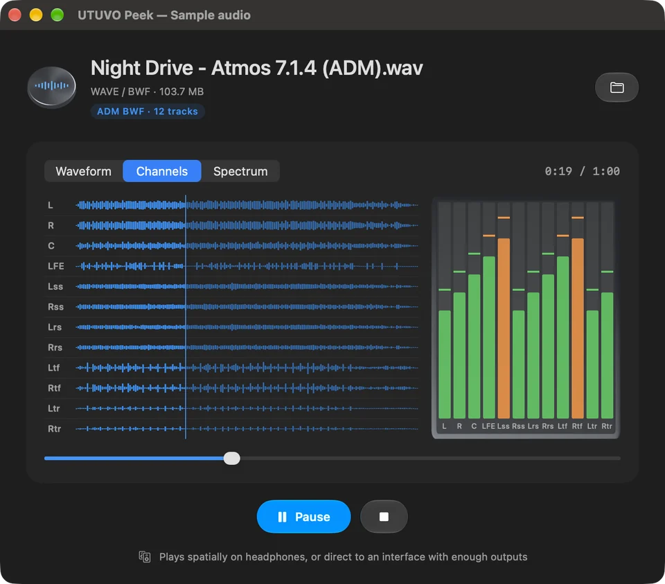

SonicPeek
音檔在 Finder 按空白鍵，就能看、聽、量。
Audio QC at a glance — loudness, true peak, multichannel meters, spectrum and delivery metadata.

Early development · MIT · Apple Silicon · macOS 14+
功能
- Integrated Loudness、LRA、True Peak、Sample Peak
- Waveform、逐聲道 Channels、Spectrum
- 最多 7.1.4 的多聲道顯示與播放
- BWF、iXML、ADM、Dolby、RF64 metadata
- Quick Look sandbox、本機分析
Direction
- Fast Finder-based audio QC
- Phase / correlation checks
- Delivery compliance validation
- Stronger spectrum and conformance testing